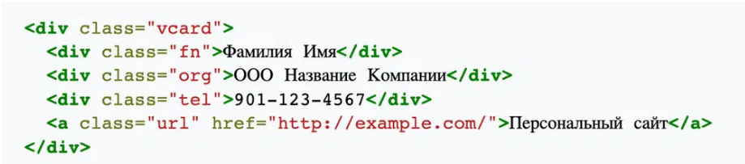
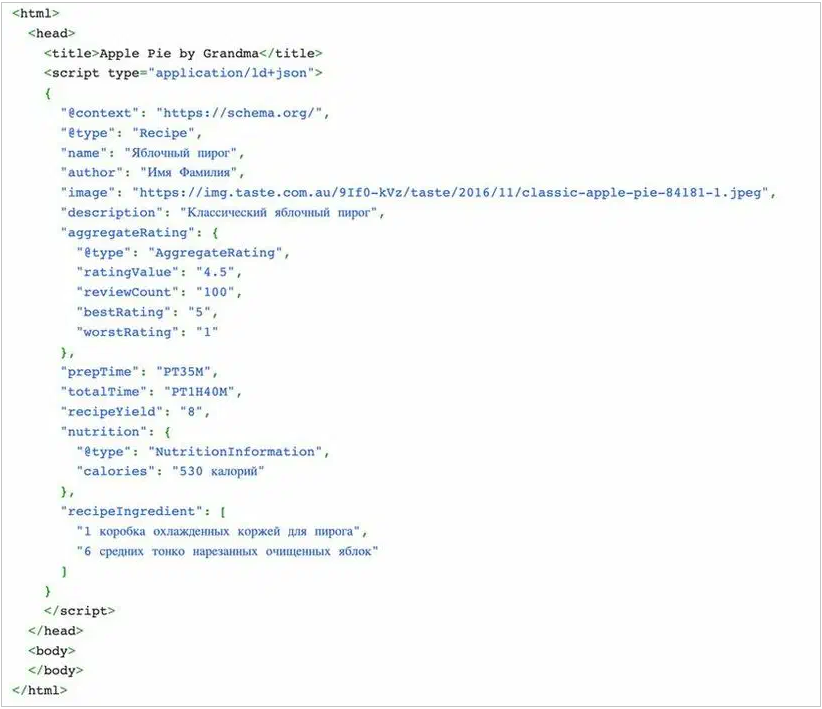
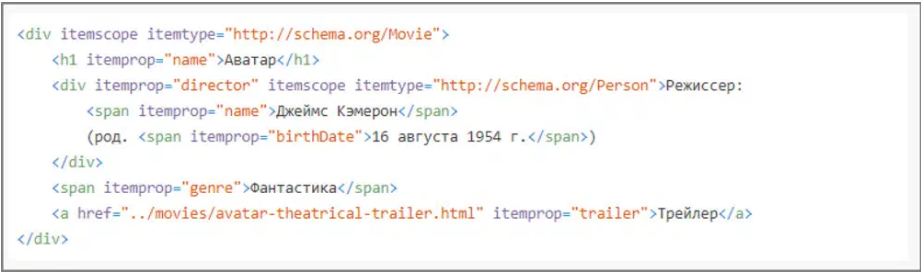

Виды синтаксиса и их особенности
Существует четыре вида синтаксиса, которые помогают «обучить» поисковую систему: RDFa, микроформаты, JSON-LD и микроданные. Разберём каждый из них:
● RDFa описывает любую сущность — человека, объект, событие. Для этого используют триплеты вида «субъект–предикат–объект», или «подлежащее, сказуемое, дополнение».
❌ www.example.com/products/apples www.example.com/products/apples/price «2.99»
✅ www.example.com/products/apples имеет свойство price, значение которого «2.99»
Так можно определить, например, цену конкретного продукта на сайте. Аналогичным образом может быть задан, например, вес, размер, описание или другие характеристики продукта. Также в микроразметке можно задать сам ресурс, дату его создания или автора конкретной статьи.
● Микроформаты в контексте синтаксиса вносят сведения о товарах, событиях, персоналиях и так далее. Для этого используются стандартные HTML-элементы. Микроформаты помогают явно указать смысловое значение блоков и сделать их доступными для обработки роботами.
Например, поисковая система Яндекса поддерживает микроформаты hCard — для описания контактной информации и hRecipe — чтобы сделать разметку кулинарных рецептов.
В этом коде использовали микроформаты: у тегов появился атрибут class и элементы, которые дают подсказку, какая информация представлена на странице (помечены красным)
● JSON-LD — метод передачи информации, реализованный с использованием текстового формата JSON в JavaScript. JSON-LD используется, когда необходимо указать объекты и подробно раскрыть их свойства. Обычно синтаксис применяют для разметки в рамках словаря Schema.org, а за счет JavaScript эта информация становится читаемой для компьютера.
Появление этого метода было настоящим прорывом: у разработчиков появился синтаксис, который, в отличие от других, позволил помещать элементы не в код HTML-страницы, а сразу в скриптовый тег — script. Он быстро стал одним из самых распространенных форматов синтаксиса для разметки контента.
Данные JSON-LD помещают в HTML-тег script, чтобы их можно было автоматически обрабатывать на странице
JSON-LD облегчает структурирование данных поисковыми роботами и распознавание понятий, а также позволяет размещать сразу несколько элементов на одной странице. Например, если речь идёт о том же рецепте печенья, то метод JSON-LD позволит разложить информацию «по полочкам». Так пользователь найдёт нужную страницу, ориентируясь не только на точечный запрос, но и на дополнительные параметры разметки: какой у печенья будет состав, сколько понадобится времени, чтобы его приготовить, какие продукты потребуются.
● Микроданные (англ. HTML microdata) — общепризнанный стандарт разметки страниц HTML с помощью атрибутов и описательных тегов, которые позволяют поисковым системам читать содержимое сайта и автоматически «забирать» необходимые данные. Когда сайт собираются рекламировать, микроданные используют для более полной индексации — добавления информации о сайте в базы данных поисковых систем.
Чаще всего этот синтаксис используют в работе со словарем Schema.org
Главное неудобство в использовании микроданных — здесь нельзя добавить фрагмент кода в раздел , придётся помечать каждый HTML-элемент отдельно. Поэтому в основном микроданные используют в тех поисковых системах, которые только частично поддерживают JSON-LD.